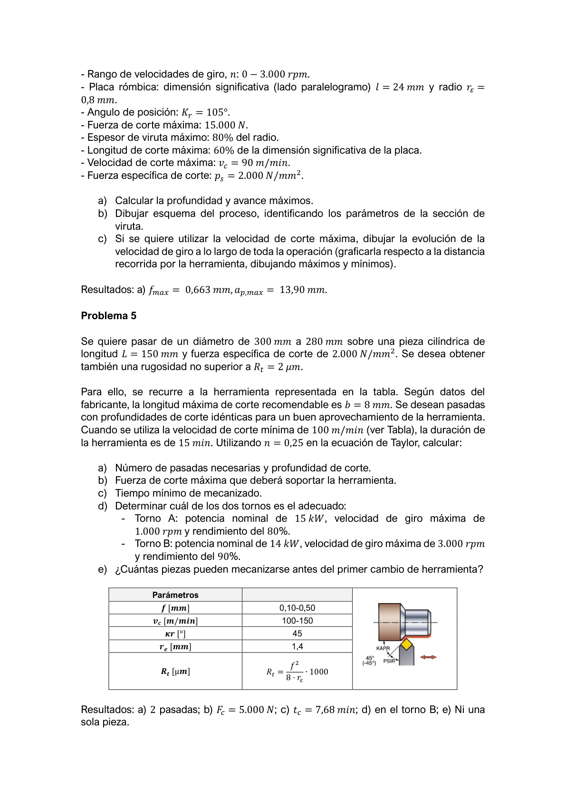
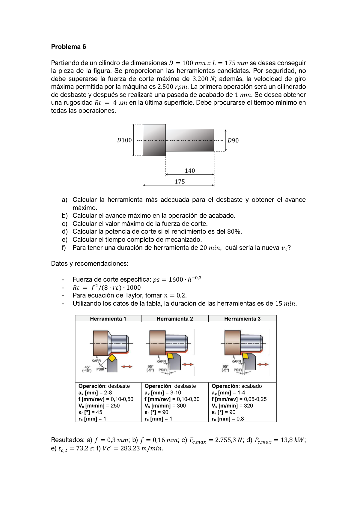
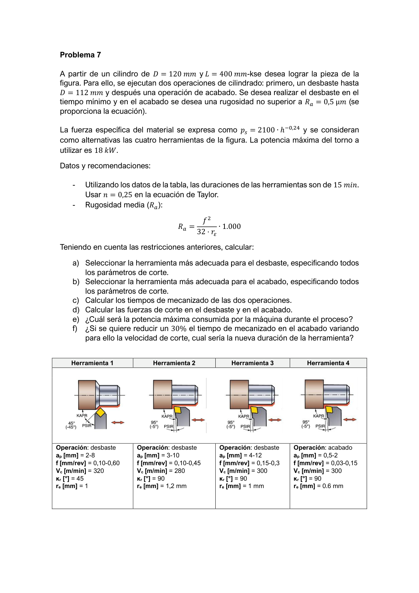
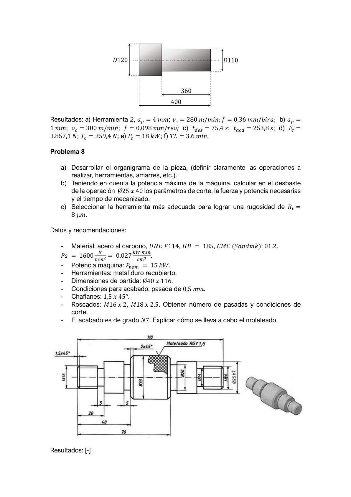
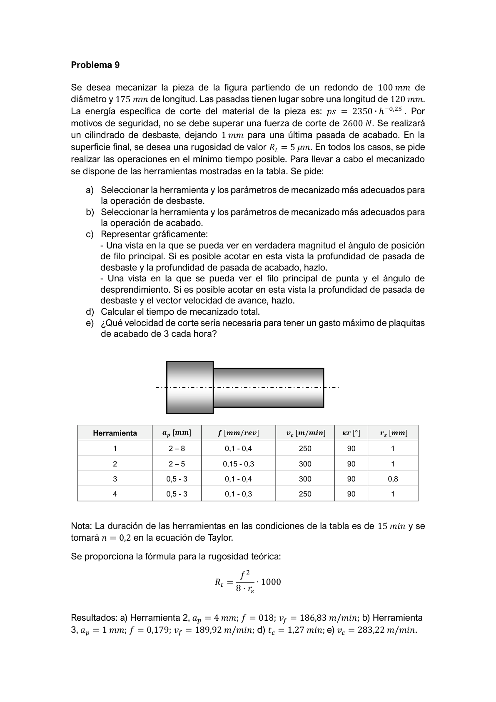

Refrentado — velocidad constante
Se desea realizar una operación de refrentado sobre una pieza cilíndrica D60 × L150 mm. La velocidad de giro se mantiene constante durante toda la operación: N = 600 rpm. Profundidad de corte ap = 0,5 mm; avance f = 0,1 mm/rev.
Se pide:
- Describir cómo son las velocidades de corte vc y de avance vf a lo largo de toda la operación.
- Calcular el tiempo de mecanizado tc.
- Si se quiere mantener constante la velocidad de corte máxima calculada en a) y la velocidad de giro máxima alcanzable por la máquina es Nmax = 2.000 rpm, describir las velocidades de avance y de giro a lo largo de la operación.
Resolución paso a paso
a) Velocidades con N = 600 rpm constante
Velocidad de avance vf (movimiento axial del carro — constante):
vf = N · f = 600 rpm × 0,1 mm/rev = 60 mm/minvf es constante durante toda la operación (N y f no cambian).
Velocidad de corte vc (tangencial en el filo):
vc(D) = π · D · N / 1000 Al inicio (D = 60 mm): vc,max = π × 60 × 600 / 1000 = 113,1 m/min Al final (D → 0 mm): vc → 0Con N constante y D decreciente, vc disminuye linealmente desde 113,1 m/min hasta 0.
b) Tiempo de mecanizado
La herramienta recorre desde el radio exterior (D/2 = 30 mm) hasta el centro:
tc = (D/2) / vf = 30 mm / 60 mm·min⁻¹ = 0,5 min = 30 sc) Ciclo CSS — velocidad de corte constante (vc = 113,1 m/min)
Se ajusta N continuamente: N = vc·1000 / (π·D). Al disminuir D, N sube hasta Nmax. Diámetro crítico D*:
D* = vc·1000 / (π·Nmax) = 113.100 / (π × 2000) ≈ 18 mm- D > 18 mm → N = 113.100/(π·D) ↑ ; vf = f·N también aumenta.
- D ≤ 18 mm → N se limita a 2.000 rpm; vf = 2.000×0,1 = 200 mm/min; vc cae.
Taylor — aumento de productividad
Se dan los siguientes datos: vc = 325 m/min; Sc = 1 mm²; duración herramienta T = 15 min. Para aumentar la productividad se quiere aumentar Sc +25% y también vc. Calcular la nueva vc cumpliendo:
- Máximo 40 placas en 6 horas de trabajo.
- Potencia máquina P = 15 kW; rendimiento η = 80%.
- Exponente Taylor n = 0,25.
- Fuerza específica de corte ps = 1.500 N/mm².
Resolución paso a paso
Paso 1 — Nueva sección de viruta
Sc' = 1,25 · Sc = 1,25 × 1 = 1,25 mm²Paso 2 — Constante de Taylor (condición de partida)
C = vc0 · T0n = 325 × 150,25 = 325 × 1,968 = 639,6 m/minPaso 3 — ijación de Tmin por restricción de productividad
Máximo 40 cambios de placa en 6 horas de trabajo continuo:
Tmin = (6 × 60 min) / 40 placas = 360 / 40 = 9 minAplicando Taylor con T = Tmin:
vc = C / Tminn = 639,6 / 90,25 = 639,6 / 1,732 = 369,27 m/minPaso 4 — Verificación restricción de potencia
Pútil = P · η = 15 × 0,80 = 12 kW Fc = ps · Sc' = 1.500 × 1,25 = 1.875 N Pc = Fc · vc / 60.000 = 1.875 × 369,3 / 60.000 = 11,54 kW < 12 kW ✓La restricción dominante es la productividad (no la potencia). Resultado: vc = 369,27 m/min.
Cilindrado en dos pasadas — AISI 1045
Se desea ejecutar una operación de cilindrado en dos pasadas idénticas sobre una pieza de acero AISI 1045, ps = 1.600 N/mm². Dimensiones iniciales: D150 × L400 mm; diámetro final D = 144 mm; f = 0,2 mm/rev. El tiempo de mecanizado no debe superar tc ≤ 5 min.
Se pide:
- Calcular la velocidad de corte vc necesaria.
- Fuerza de corte Fc.
- Potencia de corte Pc.
Resolución paso a paso
a) Velocidad de corte mínima para tc ≤ 5 min
Material a eliminar en radio: Δr = (D0 − Df)/2 = (150 − 144)/2 = 3 mm. Con 2 pasadas idénticas:
ap = 3 mm / 2 pasadas = 1,5 mm/pasada D tras 1.ª pasada: D1 = 150 − 2×1,5 = 147 mm D tras 2.ª pasada: D2 = 147 − 2×1,5 = 144 mm ✓Tiempo total (sumando las dos pasadas a velocidad constante vc):
tc = L · π · D0 / (f · vc · 1000) + L · π · D1 / (f · vc · 1000) tc = [400 · π · (150 + 147)] / (0,2 · vc · 1000) = 5 min → vc = 400 · π · 297 / (0,2 × 5 × 1000) = 365,7 m/minb) Fuerza de corte
Sc = ap · f = 1,5 × 0,2 = 0,3 mm² Fc = ps · Sc = 1.600 × 0,3 = 480 Nc) Potencia de corte
Pc = Fc · vc / 60.000 = 480 × 365,7 / 60.000 = 2,9 kWRefrentado — placa rómbica con restricciones
Se desea realizar una operación de refrentado. Condiciones:
- Rango de velocidades de giro: 0 – 3.000 rpm.
- Placa rómbica: dimensión significativa l = 24 mm; radio rϵ = 0,8 mm.
- Ángulo de posición κr = 105°.
- Fuerza de corte máxima: Fc,max = 15.000 N.
- Espesor de viruta máximo: 80% del radio.
- Longitud de corte máxima: 60% de la dimensión significativa.
- Velocidad de corte máxima: vc = 90 m/min.
- Fuerza específica de corte: ps = 2.000 N/mm².
Se pide:
- Calcular la profundidad ap y el avance f máximos.
- Dibujar esquema del proceso, identificando los parámetros de la sección de viruta.
- Si se quiere utilizar la velocidad de corte máxima, dibujar la evolución de N a lo largo de la operación.
Resolución paso a paso
a) Avance máximo fmax
Restricción: espesor de viruta h = f·sin(κr) ≤ 80% del radio de punta rε:
hmax = 0,8 · rε = 0,8 × 0,8 = 0,64 mm fmax = hmax / sin(κr) = 0,64 / sin(105°) = 0,64 / 0,9659 = 0,663 mm/revsin(105°) = sin(75°) = (√6 + √2)/4 ≈ 0,9659
a) Profundidad máxima ap,max
Restricción: longitud de contacto lc = ap/sin(κr) ≤ 60% de la dimensión significativa l:
lc,max = 0,6 · l = 0,6 × 24 = 14,4 mm ap,max = lc,max · sin(κr) = 14,4 × 0,9659 = 13,90 mmAdvertencia: si se aplican fmax y ap,max simultáneamente: Fc = ps·ap·f = 2000 × 13,90 × 0,663 = 18.430 N > Fc,max = 15.000 N En operación real: ap·f ≤ Fc,max/ps = 7,5 mm²
c) Evolución de N con vc = 90 m/min constante (refrentado CSS)
Al disminuir D, N = vc·1000/(π·D) aumenta hasta alcanzar Nmax = 3.000 rpm:
D* = vc·1000 / (π·Nmax) = 90.000 / (π × 3000) ≈ 9,55 mm D > 9,55 mm → N crece continuamente con la fresa acercándose al centro D ≤ 9,55 mm → N = 3.000 rpm (limitada); vc cae por debajo de 90 m/minCilindrado — selección de torno y Taylor
Se quiere pasar de D = 300 mm a D = 280 mm sobre una pieza cilíndrica L = 150 mm con ps = 2.000 N/mm². Rugosidad Rt ≤ 2 μm. Datos herramienta: b = 8 mm, vc ∈ [100, 150] m/min, κr = 45°, rϵ = 1,4 mm. Rt [μm] = f² / (8·rϵ) · 1000. Con vc,min = 100 m/min la herramienta dura T = 15 min; n = 0,25 (Taylor).
Se pide:
- Número de pasadas necesarias y profundidad de corte.
- Fuerza de corte máxima que soportará la herramienta.
- Tiempo mínimo de mecanizado tc.
- Determinar el torno más adecuado: Torno A: P = 15 kW, Nmax = 1.000 rpm, η = 80% — Torno B: P = 14 kW, Nmax = 3.000 rpm, η = 90%.
- ¿Cuántas piezas pueden mecanizarse antes del primer cambio de herramienta?

Resolución paso a paso
Los pasos que dependen de la tabla de herramientas usan los valores óptimos del enunciado.
a) Número de pasadas y profundidad
Material en radio: Δr = (300 − 280)/2 = 10 mm. Profundidad máxima de la herramienta (plaquita de κr = 45°, b = 8 mm):
ap,max = b · sin(κr) = 8 × sin(45°) = 5,66 mm → Nº pasadas = ⌈10 / 5,66⌉ = 2 pasadas (ap = 5 mm cada una)b) Fuerza de corte máxima
Con los parámetros óptimos de la herramienta seleccionada (f según tabla):
Fc = ps · ap · f = 2.000 × 5 × 0,50 = 5.000 Nc) Tiempo mínimo de mecanizado
Con vc,max = 150 m/min y f = 0,50 mm/rev, sumando ambas pasadas:
tc = L·π·(D0 + D1) / (f · vc · 1000) D0 = 300 mm; D1 = 290 mm tc = 150·π·590 / (0,5 × 150 × 1000) = ≈ 7,68 mind) Selección de torno
Pc = Fc · vc / 60.000 = 5.000 × 150 / 60.000 = 12,5 kW Torno A: Pútil = 15 × 0,80 = 12,0 kW < 12,5 kW → NO válido Torno B: Pútil = 14 × 0,90 = 12,6 kW > 12,5 kW → VÁLIDO Nreq = 1000·150 / (π·300) ≈ 159 rpm << Nmax,B = 3.000 rpm ✓e) Piezas por herramienta (Taylor)
Vida inicial Tref = 15 min a vc,ref = 100 m/min. Con vc = 150 m/min (n = 0,25):
T' = Tref · (vc,ref / vc)1/n = 15 × (100/150)4 = 15 × 0,198 = 2,97 mintc,pieza = 7,68 min > T' = 2,97 min → la herramienta se desgasta antes de completar la primera pieza.
Resultado: ninguna pieza completa antes del primer cambio de herramienta.
Cilindrado D100 → D90 (desbaste + acabado)
Partiendo de un cilindro D = 100 mm × L = 175 mm se desea conseguir la pieza de la figura (D90 exterior, escalón interior). Restricciones: Fc,max = 3.200 N; Nmax = 2.500 rpm. Primera operación: cilindrado de desbaste; segunda: pasada de acabado de 1 mm. Rugosidad Rt = 4 μm en la última superficie. Minimizar el tiempo en todas las operaciones. Se proporcionan tres herramientas candidatas (κr = 45°/95°/90°, distintos rangos de f y ap).
Se pide:
- Herramienta más adecuada para el desbaste y avance máximo.
- Avance máximo en el acabado.
- Valor máximo de la fuerza de corte.
- Potencia de corte si el rendimiento es η = 80%.
- Tiempo completo de mecanizado.
- Para una duración de herramienta de T = 20 min, ¿cuál sería la nueva vc? (n = 0,2; Tref = 15 min)

Resolución paso a paso
Se requieren las tres herramientas candidatas del enunciado para la selección. Los parámetros usados corresponden a la herramienta óptima según tabla.
a) Herramienta de desbaste y avance máximo
El desbaste elimina 4 mm (de D=100 a D=92 para dejar 1 mm al acabado → D=92 mm). Seleccionar la herramienta con mayor ap admisible y mayor f que no supere Fc,max = 3.200 N:
Fc = ps · ap · f ≤ 3.200 N Con herramienta seleccionada: ap = 4 mm → fmax = 3.200 / (ps · 4) → f = 0,3 mm/revb) Avance de acabado por rugosidad Rt = 4 μm
Rt = f² · 1000 / (8 · rε) ≤ 4 μm f ≤ √(4 × 8 × rε / 1000) → f = 0,16 mm/rev (con rε de herramienta seleccionada)c) Fuerza de corte máxima (en el desbaste)
Fc,max = ps · ap · f = ps × 4 × 0,3 = 2.755,3 N (ps varía con espesor de viruta para el material)d) Potencia máxima de corte
vc,max = Nmax · π · D0 / 1000 = 2500 · π · 100 / 1000 = 785,4 m/min Pc,max = Fc · vc,max / 60.000 / η = 2.755,3 · vc / (60.000 · 0,8) = 13,8 kWe) Tiempo de la operación de acabado
Nmax = 2500 rpm; f = 0,16 mm/rev; ap = 1 mm; L ≈ 175 mm tc,acabado = L / (f · N) = 175 / (0,16 × 2500) · 60 = 73,2 sf) Nueva vc para T = 20 min (Taylor: n = 0,2; Tref = 15 min)
vc,ref · Trefn = vc' · T'n vc' = vc,ref × (Tref / T')n = vc,ref × (15 / 20)0,2 vc' = vc,ref × 0,750,2 = vc,ref × 0,944 = 283,23 m/minOrganigrama completo — D120 → D112 + acabado ★ Ordinaria 2021-22
A partir de un cilindro D = 120 mm × L = 400 mm se desea lograr la pieza de la figura (desbaste hasta D = 112 mm; luego pasada de acabado). Pmax máquina = 18 kW. ps = 2.100 · h−0,24 N/mm². Cuatro herramientas candidatas (tabla). Therr = 15 min; n = 0,25 (Taylor). Rugosidad media: Ra = f² / (32·rϵ) · 1.000.
Se pide:
- Seleccionar la herramienta más adecuada para el desbaste (tiempo mínimo), especificando todos los parámetros de corte.
- Seleccionar la herramienta más adecuada para el acabado con Ra ≤ 0,5 μm, especificando todos los parámetros.
- Calcular los tiempos de mecanizado de ambas operaciones.
- Calcular las fuerzas de corte en desbaste y acabado.
- ¿Cuál será la potencia máxima consumida?
- Si se quiere reducir un 30% el tc de acabado variando vc, ¿cuál será la nueva duración de herramienta?

Organigrama Ø40×116 — M16, M18, moleteado ★ Ordinaria 2023-24
Partiendo de un redondo Ø40 × L116 mm se desea conseguir la pieza de la figura (eje escalonado con Ø25h7, Ø31, Ø33, roscas M16×2 y M18×2,5, chaflanes 1,5×45°, y moleteado RGV 1,6). Ps = 1.600 N/mm²; potencia nominal P = 15 kW; herramientas de metal duro recubierto; acabado N7.
Se pide:
- Desarrollar el organigrama de la pieza (operaciones, herramientas, amarres, etc.).
- Teniendo en cuenta la potencia máxima de la máquina, calcular en el desbaste de Ø25 × 40 mm los parámetros de corte, la fuerza y potencia necesarias, y el tiempo de mecanizado.
- Seleccionar la herramienta más adecuada para lograr una rugosidad Rt = 8 μm. Explicar cómo se lleva a cabo el moleteado.

Organigrama Ø75×185 — M20, M26, chaveta (con Tabla 1) ★ Extraordinaria 2025-26
Utilizando las herramientas de la Tabla 1, se desea fabricar la pieza Ø75 × 185 mm (dimensiones iniciales) que incluye: cilindrados Ø68, Ø42, Ø30, Ø20, Ø20j5×2, Ø16 mm, roscas M20×2,5 y M26×3, chaveta Ø26h6, taladros, etc. ps = 3.000 N/mm² (constante). Torno paralelo: Nmax = 1.800 rpm; Pmax = 10 kW.
Se pide:
- Utilizando la Tabla 1, desarrollar el organigrama (operaciones, herramientas, amarres). Ayúdate de esquemas/croquis.
- Para el desbaste hasta D42 (cilindrado L = 98 mm), seleccionar la herramienta más adecuada y las condiciones de corte (ap, nº pasadas) para realizar la operación en el menor tiempo posible. Obtener la potencia de corte necesaria.
- Calcular la potencia necesaria y el tiempo de mecanizado para el fresado de la chaveta. Describir la herramienta, máquina y amarre.
Roscados de métrica ISO paso normal (M20×2,5 y M26×3). No es necesario definir el número de pasadas.
